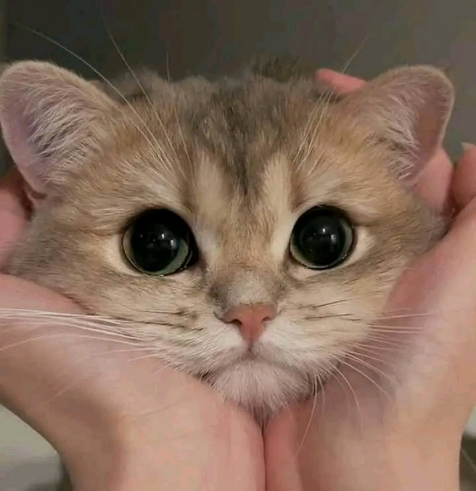
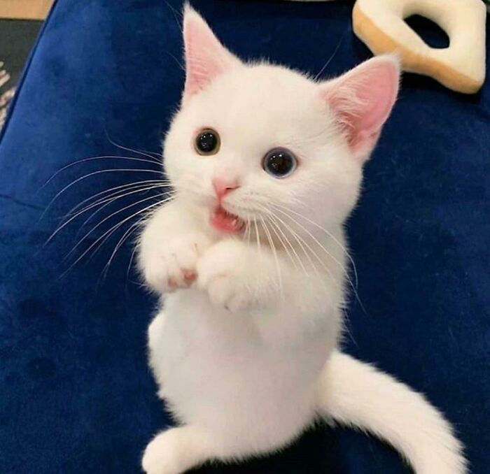
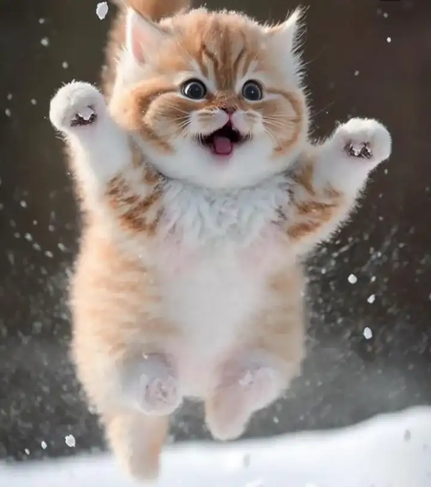
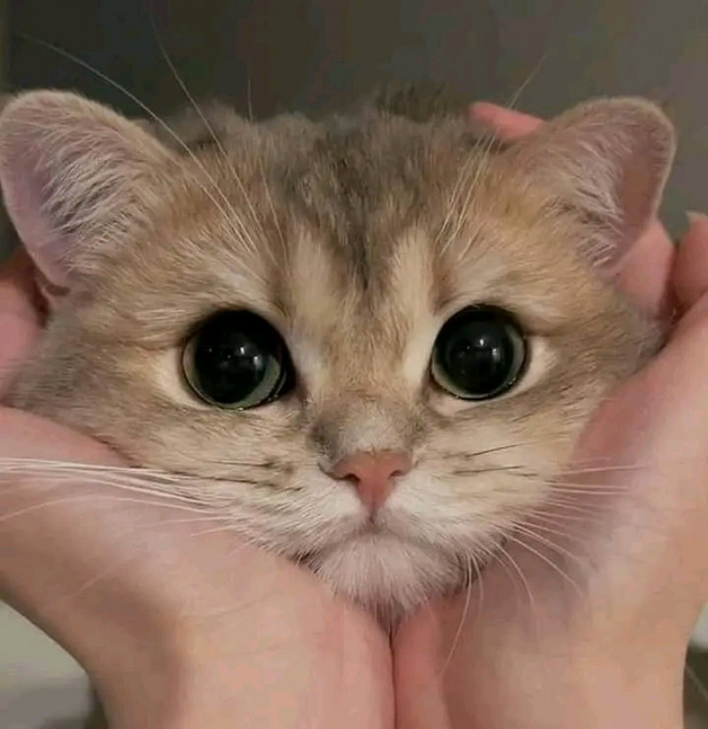
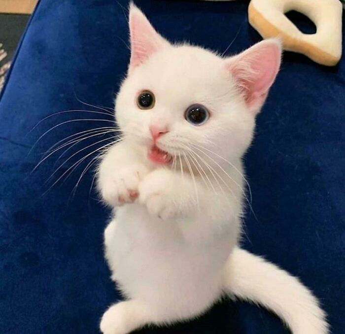
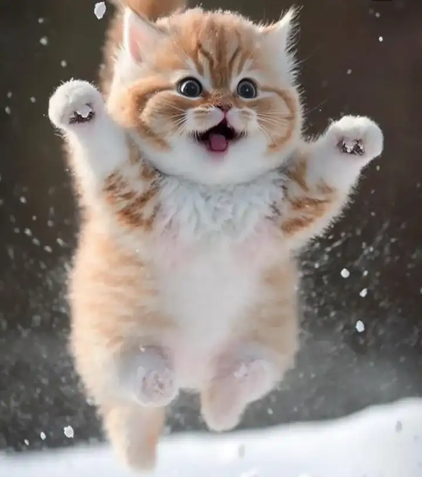

Cat Lovers Community |
tempat para Cat Lovers mencurahkan perasaan dan saran untuk kucing kesayangan
tempat para Cat Lovers mencurahkan perasaan dan saran untuk kucing kesayangan
 






Website yang didirikan dan didedikasikan kepada mereka yang sangat menyukai dan menyayangi kucing a.k.a. Cat Lovers, memberikan opini disertai pesan dan ajakan kepada sesama penyayang binatang imut lucu, kucing.
Tempat berbagi keluh kesah antara pemilik kucing yang sedang memberikan wadah untuk saling memberikan bantuan atau masukan dari sesama penyuka kucing agar dapat menyayangi kucing mereka dan merawat dengan baik. Bilamana terdapat permasalahan dalam penanganan terhadap kucing, maka wadah ini dapat menjadi solusi bagi mereka yang sangat menyayangi kucing sebagai teman para Cat Lovers.